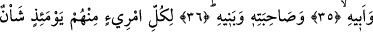
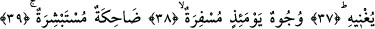
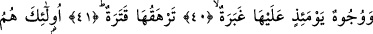
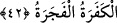

İŞTE O GÜN
33. Kulakları sağır eden o ses geldiğinde,
34. İşte o gün kişi kardeşinden,
35. Annesinden, babasından,
36. Eşinden ve çocuklarından kaçar.
37. O gün herkesin kendine yetip artacak bir derdi vardır.
38. O gün birtakım yüzler parlak,
39. Güleç ve sevinçlidir.
40. Yine o gün birtakım yüzleri toz kaplamış
41. Ve karanlıklar bürümüştür.
42. İşte bunlar kâfirlerdir ve günahkarlardır.
Bu ifâde, onların ilk yaratılışlarının, yaşama ve geçimlerinin beyân edilmesinin
ardından âkıbetlerinin ahvalini beyâna başlayan bir cümledir. Âyetin başındaki “fa”
harfi, tertip ifâde eder. Bir başka deyişle; fa’dan sonraki kısmın, kendisinden önceki
kısımdan daha sonra cereyan ettiğini ifâde eder. Buna göre âyet-i kerimeden, onlara ve
hayvanlarına verilen nimetlerin çok kısa bir zaman sonra sona ereceğini anlamış
olmaktayız. Ayrıca “metâ’” kelimesi de onların hızla elden gideceğine ve yakında yok
olacağına sözcük olarak işâret etmektedir. Âyetin başındaki “izâ” edatının cevabı
mahzuftur. Çünkü bunun ne olduğunu bundan sonraki âyet bize göstermektedir. Buna göre
cümleyi takdir edip tam olarak söylemek gerekirse şöyle deriz: “Kulakları sağır eden o
ses geldiğinde herkes kendi başının derdine düşer.”
Âyetteki “es-sâhha” kelimesinin anlamı; “bütün yaratıkların kulak kesildiği büyük
belâ” demektir. Bir başka ifâdeyle; bütün herkes o çığlığa kulak kesilir. Bu açıklamaya
göre kelime, “sahha” fiilinden türemedir. Bu fiilin anlamı da “kulak vermek, kulak
kesilmek ve dinlemek”tir. Burada sura ikinci üfürülüş sonucu çıkan ses “kulak veren,
kulak kesilen” olarak nitelenmektedir. Bunun sebebi; kabirlerinde yatan ölülerin sura
ikinci kez üfürülmesi sonucu çıkan sese kulak kesilmelerinden dolayıdır. Şu halde